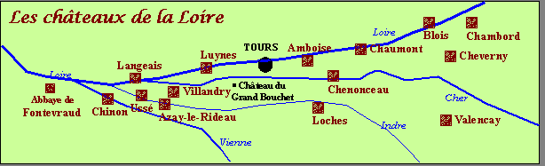

BIENVENUE AU CHÂTEAU DU GRAND BOUCHET
Les Appartements d’hôtes de Charme et Gîtes au cœur de la Vallée de la Loire


La Vallée de la Loire et ses Châteaux sont inscrits au Patrimoine Mondial de l'Humanité par l'UNESCO
Situé au cœur de la Vallée de la Loire, le Domaine du Grand Bouchet, hâvre de paix et de verdure aux portes de Tours et de Villandry, sera pour vous le lieu de séjour idéal pour découvrir la Touraine : visite des châteaux de la Loire et des jardins de Touraine, dégustation des vins de Loire, balades à pied ou en vélo, vol en montgolfière, golf...


Member of Guest and Garden Accomodation network for garden lovers